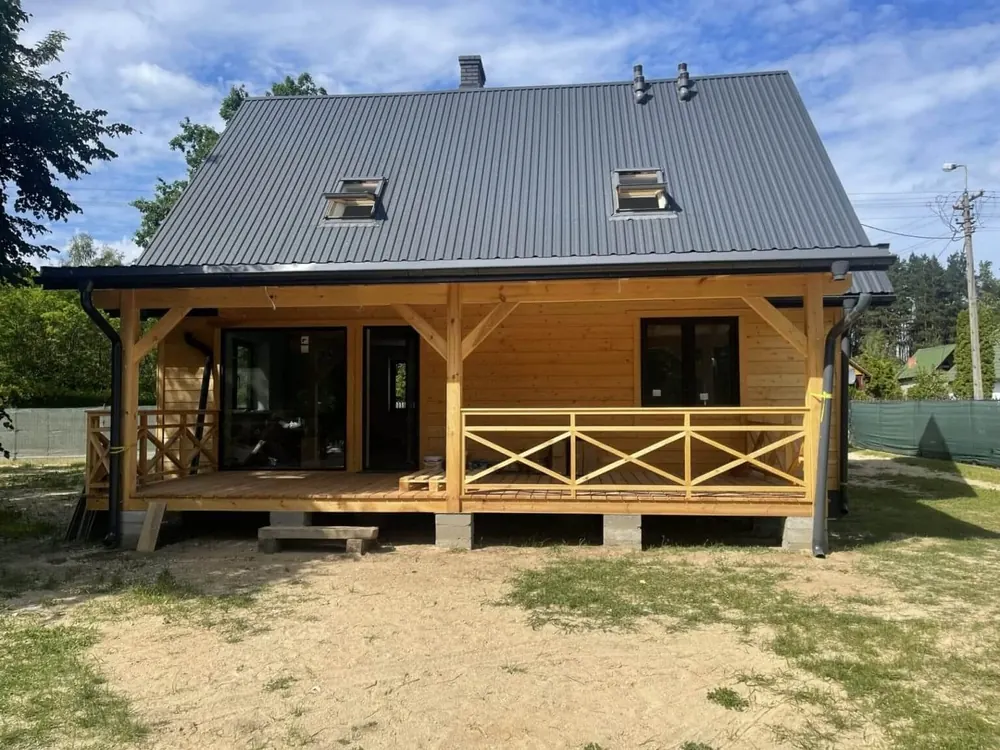
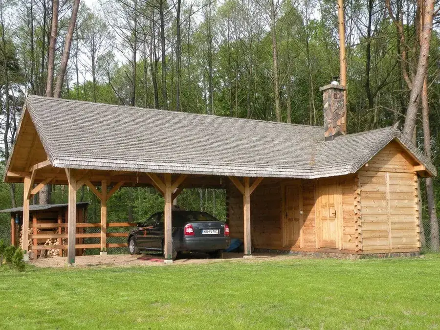
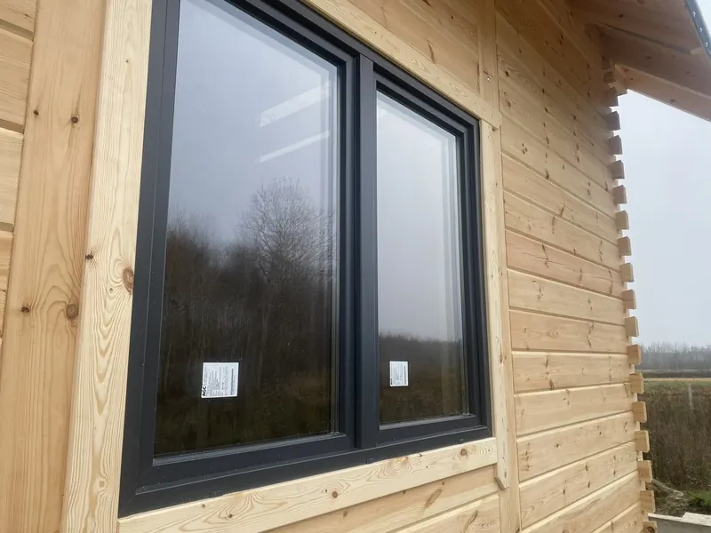
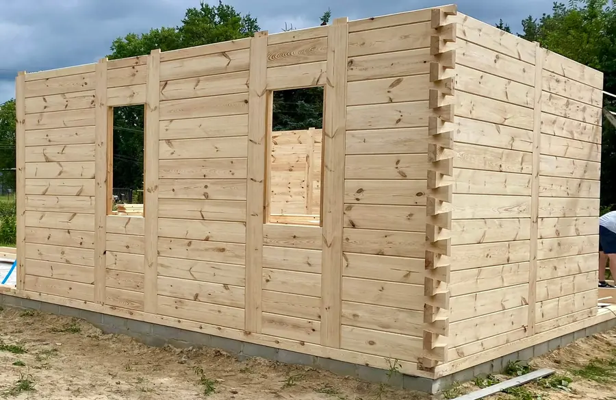

Łazy k. Wyszkowa, firma rodzinna od 1996 r.
Domy z bali łączone na jaskółczy ogon
Bal do bala na zamki ciesielskie i drewniane czopy, bez gwoździ. Tak budował mój ojciec Roman od lat 60. i tak budujemy dziś. Na konstrukcję dajemy 15 lat gwarancji.
Jedna firma, jeden adres, jedno nazwisko
Firmę prowadzi osobiście Stanisław Biernacki, mistrz ciesielstwa. Nad każdą budową czuwa sam, od wyboru drewna po odbiór domu. W naszych domach mieszka już ponad 200 rodzin.
Jeśli szukają Państwo informacji o naszej firmie, cenach czy realizacjach, obok są wszystkie nasze dane. Inne adresy i numery nie należą do nas.
- Firma
- Domy z bali Stanisław Biernacki
- Właściciel
- Stanisław Biernacki, mistrz ciesielstwa od 2001 r.
- Od kiedy
- Firma od 1996 r., rodzinne ciesielstwo od lat 60.
- Adres
- Łazy 95 k. Wyszkowa, 07-130 Łochów
- Telefon
- 602 656 200, 602 656 300
- biernacki@domyzbali.pl
- Nasze strony
- domyzbali.pl oraz mebleloft-biernacki.pl
Co budujemy
Domy od podstaw według projektu klienta, a także przebudowy i remonty zabytkowych domów drewnianych, zgodnie z wymogami konserwatora zabytków.

Domy z bali
Całoroczne i letniskowe, z bali sosnowych, świerkowych lub modrzewiowych, suszonych komorowo.od 1 900 zł/m²

Domy szkieletowe
Szybka budowa, łatwa rozbudowa i dobra izolacja, wełna 20 cm w stanie deweloperskim.od 1 700 zł/m²

Garaże, wiaty, narzędziówki
Także altany i tarasy, w tym samym stylu i z tego samego drewna co dom.

Okna i blachodachówka
Okna VEKA i ALUPLAST oraz blachodachówka Blachodach, z montażem przy budowie.

Meble Loft Biernacki
Sofy, fotele i stoliki z naszej stolarni, do domu i na taras.

Zamki ciesielskie zamiast gwoździ
Ściany stawiamy metodą sumikowo-łątkową: pionowe łątki, poziome sumiki i głębokie zamki wycięte w drewnie. Konstrukcja jest sztywna i szczelna bez gwoździ i wypełniaczy szczelin.
- Węgły na jaskółczy ogonNarożniki łączone na jaskółczy ogon, sumiki na obce pióro, a całość na drewniane czopy i kołki, tzw. teble.
- Patent P.397523Przystawka robocza frezarki do mechanicznego zacinania węgłów: szybciej i dokładniej niż ręcznie.
- Niezależna konstrukcja wewnętrznaStrop opiera się na wewnętrznym szkielecie, nie na ścianach z bali. Wnętrze można wykańczać od razu, bez obaw o pękanie ścian, gdy dom pracuje.
Ceny bez niespodzianek
Ceny szacunkowe za m², z materiałem i budową na działce klienta. Dokładną wycenę przygotujemy na podstawie Państwa projektu. Nie mają Państwo projektu? Współpracujemy z biurem architektonicznym, które przygotuje go razem z dokumentami do pozwolenia na budowę.
Stan surowy otwarty
od 1 900 zł/m²
- ściany z impregnowanych, suszonych komorowo bali sosnowych 7-10/22 cm
- wewnętrzna niezależna konstrukcja ciesielska (bez osiadania stropu)
- konstrukcja stropu, ścian działowych i nośnych
- odeskowany dach kryty papą
Stan surowy zamknięty
od 2 100 zł/m²
- wszystko ze stanu surowego otwartego
- okna PCV
- drewniane drzwi zewnętrzne
- oblistwowanie okien i drzwi na zewnątrz
Stan deweloperski
od 4 100 zł/m²
- ocieplenie wełną mineralną 20 cm, λD 0,033 W/m·K
- ścianki działowe z izolacją akustyczną
- wylewki, schody drewniane, komin systemowy
- drzwi zewnętrzne i wewnętrzne drewniane, parapety
Stan surowy otwarty
od 1 700 zł/m²
- szkielet ścian zewnętrznych z drewna konstrukcyjnego
- płyta OSB lub deska elewacyjna sosnowa albo świerkowa
- wiatroizolacja ścian zewnętrznych
- konstrukcja ścian wewnętrznych i stropu
Stan surowy zamknięty
od 1 900 zł/m²
- wszystko ze stanu surowego otwartego
- okna PCV
- drewniane drzwi zewnętrzne
- oblistwowanie okien i drzwi na zewnątrz
Stan deweloperski
od 3 900 zł/m²
- ocieplenie wełną mineralną 20 cm, λD 0,033 W/m·K, paroizolacja
- ścianki działowe z izolacją akustyczną
- wylewki, schody drewniane, komin systemowy
- drzwi drewniane, parapety drewniane
Dom z podwójnego bala wyceniamy indywidualnie. Pełny zakres każdego stanu jest w cenniku.
Nasze domy
Same nasze budowy, bez wizualizacji z katalogu. Zdjęcia można przesuwać i powiększać.

Ciesielstwo z ojca na syna
„Jako mały chłopiec podpatrywałem ojca w warsztacie. Przez 15 lat pracowałem u niego, a w 1996 roku założyłem własną firmę.”
Dyplom mistrza ciesielstwa Stanisław Biernacki ma od 2001 roku. Przez 40 lat zbudował ponad 200 domów i 100 obiektów małej architektury. W jego warsztacie pierwsze kroki stawiają praktykanci z Izby Rzemieślniczej w Wyszkowie, a wielu z nich zostaje w zespole na lata.
Drewno sosnowe, świerkowe i modrzewiowe bierzemy z polskich lasów, od tartaków, z którymi pracujemy od lat. Suszymy je komorowo i impregnujemy po obróbce, przed montażem domu.
- Ścięcie drewna zimą
- Cięcie pod elementy domu
- Obróbka w tartaku
- Suszenie komorowe
- Obróbka w stolarni
- Montaż na działce
- Wykończenie wnętrza
Bezpłatna wstępna wycena
Prosimy opisać dom, który Państwo planują. Odpowiemy z wstępnym kosztem budowy.